Machine Learning in Materials Processing & Characterization
Unit 9: ML for Characterization Signals
FAU Erlangen-Nürnberg


§1 · Signals & their physics
01. Unit 9 — The Signal Application & Domain Unit
This unit is not a methods unit. The methods were derived elsewhere; here we ask what the signal physics demands of them.
| Method | Owned by (derived in) |
|---|---|
| PCA / SVD | MFML u02 · ML-PC u02 |
| Clustering, autoencoders | MFML u05 · ML-PC u05 |
| NMF | MFML u02 · ML-PC u05 |
| t-SNE / UMAP, latent spaces | MFML u09 |
| MAE / SSL (DINOv2, I-JEPA) | MFML u09 · ML-PC u09b |
Important
We reference these methods. We do not re-derive them. Unit 9 is about background subtraction, calibration transfer, quantification, rotational ambiguity, operando streaming — the things the signal physics forces on you.
Learning outcomes. After 90 minutes you can:
- Explain how the probe physics dictates the structure of XRD / EELS / EDX / XPS / Raman signals.
- Build a defensible spectral preprocessing pipeline (background → calibrate/align → normalize).
- Apply MCR-ALS and reason about rotational ambiguity.
- Turn a latent/peak into a quantified concentration with an error bar (Cliff-Lorimer / ζ-factor).
- Deploy EM-native deep denoisers (conv-DAE, UDVD) and SSL-pretrained encoders for low-dose EELS/EDS, and run operando novelty detection.
02. Beyond Images: 1-D Signals
- Most of the course so far: spatial data (micrographs, microstructure maps).
- But many instruments produce 1-D spectral signals — intensity vs. energy / angle / wavenumber:
- XRD — crystal structure via Bragg peaks
- EELS — bonding and electronic structure (edges, fine structure)
- EDX/EDS — elemental composition (characteristic X-ray lines)
- XPS — surface chemistry and oxidation states (chemical shifts)
- Raman — molecular / phonon fingerprints
- Modern instruments collect millions of spectra per experiment — every pixel of a STEM scan is a spectrum (spectrum imaging).
Note
A spectrum with \(N\) channels is a vector \(\mathbf{x} \in \mathbb{R}^N\). Every linear-algebra / ML tool applies directly — but each “dimension” is a physical energy channel, and that is what makes this unit different from generic vector ML.
03. The Nature of Characterization Signals
- High dimensionality — 1024–4096 channels; each spectrum a point in \(\mathbb{R}^{N}\).
- Sparse peaks — most channels are background; the science lives in a handful of channels.
- Continuous backgrounds — bremsstrahlung (EDX), plasmon tails (EELS), fluorescence (Raman).
- Noise — Poisson (shot) noise dominates at low dose; Gaussian detector/readout noise adds on top.
- Variability — peak positions shift with composition; peak shapes change with bonding/oxidation.
- Low intrinsic dimensionality — a sample with \(P\) phases spans \(\approx P\) + a few directions, \(\ll N\).
Important
The signal-to-noise is Poisson: variance equals the mean. A peak with 100 counts has \(\pm 10\) noise; a background of 10 000 counts has \(\pm 100\). This is why dose, normalization, and background all couple — you cannot treat them independently.
04. Signal Formation: The Physics of the Probe
The signal’s structure is dictated by the physics of the probe — every method in §2–§4 must respect it.
- EELS — ionization edges (sawtooth/hydrogenic) on a steep plasmon / power-law background (\(\sim AE^{-r}\)); near-edge fine structure (ELNES) encodes valence.
- EDX — characteristic lines (Gaussian-ish, detector-broadened) on a bremsstrahlung continuum; absorption + fluorescence distort intensities.
- XRD — Bragg peaks at \(2\theta\) from \(d\)-spacings; instrumental + size/strain broadening (Caglioti, Scherrer); preferred orientation reweights intensities.
- XPS — core-level lines whose binding-energy shift (chemical shift, ~0.1–3 eV) encodes oxidation state; inelastic background (Shirley/Tougaard).
- Raman — sharp phonon lines on a broad, sample-dependent fluorescence background that can dwarf the signal.
Note
Different physics → different background model, different noise, different invariances. There is no universal preprocessing. The pipeline must be chosen per modality.
[FIGURE: five mini-panels, one per modality, each showing the characteristic peak/edge shape sitting on its characteristic background, annotated with the physical origin of each component]
05. Why ML — and Where Manual Fitting Breaks
- Manual peak fitting is slow, subjective, non-reproducible, and does not scale.
- 10 peaks in 1 spectrum: a Friday afternoon. 10 peaks in \(10^6\) spectra: impossible.
- Overlapping peaks make decomposition ambiguous.
- Fe-L and Mn-L (EELS) overlap near ~640 eV; Ti-Kα and Ba-Lα (EDX) overlap near ~4.5 keV.
- Subtle spectral changes encode the science.
- The Fe-L₂,₃ white-line ratio distinguishes Fe²⁺ from Fe³⁺; a 0.3 eV onset shift = an oxidation-state change.
- Batch effects — calibration drift, detector aging, beam damage, contamination — break naïve models.
Important
Pointer. The methods that solve these — PCA/SVD (MFML u02, ML-PC u02), autoencoders / VAE / conv-AE (MFML u05, ML-PC u05), t-SNE/UMAP & latent spaces & MAE/DINOv2/I-JEPA (MFML u09) — were all derived there. From here we apply them to what the signal physics demands.
§2 · The spectral preprocessing pipeline
06. The Pipeline — Garbage In Dominates Everything

- Every box is a physics-informed choice, not a default. Order matters (slide 04).
- The reduction/decomposition box is the referenced methods (PCA/AE/NMF) — it is one box, not the unit.
Important
The dominant error term in any spectral-ML result is almost never the model — it is the preprocessing. A 2% baseline error swamps the difference between PCA and a transformer. §2 is the unit’s real content because almost none of it exists in the methods units.
07. Baseline / Background Subtraction
Algorithmic (model-free)
- SNIP — Statistics-sensitive Nonlinear Iterative Peak-clipping (Ryan et al. 1988): iteratively clip each channel to the min of itself and the mean of its \(\pm m\) neighbours; peaks survive, the smooth continuum is estimated.
- Asymmetric Least Squares (AsLS) (Eilers and Boelens 2005): penalized smoother with asymmetric weights — points above the baseline are down-weighted. Two knobs: smoothness \(\lambda\), asymmetry \(p\).
Physical (model-based)
- EELS: power-law \(A E^{-r}\) in a pre-edge window, or a linear combination of power laws + local background averaging that pool spatial redundancy (Cueva et al. 2012).
- EDX: bremsstrahlung continuum (Kramers + detector response + absorption).
- XPS: Shirley / Tougaard inelastic background.
Important
A wrong background biases every downstream feature — peak areas, ratios, latent coordinates. It is a systematic, not random, error: averaging more spectra does not remove it.
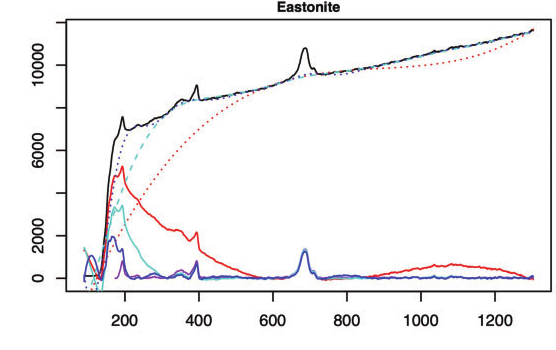
A real Raman spectrum (black) with a strong rising fluorescence background; several baseline estimates (dotted/dashed) and the resulting baseline-corrected spectra. Background subtraction is the measurement here, not housekeeping (Xu et al. 2021).
07a. EELS Background in the STEM — LCPL & Local Background Averaging
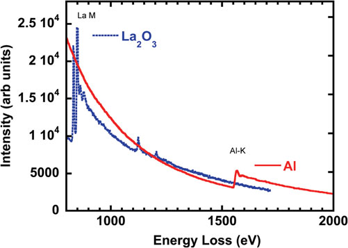
The STEM-specific problem. At atomic resolution and low dose, the power-law fit is itself dominated by Poisson noise — a noisy background becomes a systematic error in every extracted edge (slide 03).
- Linear combination of power laws (LCPL). One global \(E^{-r}\) is too rigid; a small basis of power laws captures curvature a single law misses.
- Local background averaging (LBA). Borrow background counts from spectrally-similar neighbours — the spectrum image is redundant, so averaging the background (not the signal) cuts its error without blurring the edge.
Important
Exploiting dataset redundancy improves background estimation and chemical sensitivity — the basis of the Cornell Spectrum Imager (Cueva et al. 2012). Better background craft, not a bigger model, is what lowers detection limits.
08. Energy / 2θ Calibration & Spectral Alignment
- The problem. The physical axis is not stable: EELS energy offset drifts (zero-loss wander), XRD \(2\theta\) has zero/sample-height errors, Raman wavenumber depends on laser/grating. A 0.3 eV / 0.05° shift destroys cross-spectrum ML.
Peak-referenced calibration. Anchor to known features:
- EELS: zero-loss peak (0 eV), a known edge onset.
- XRD: a silicon / LaB₆ standard, known reflections.
- Raman: a Si line at 520.7 cm⁻¹.
Warping for non-rigid misalignment.
- DTW — dynamic time warping: optimal monotone alignment of two spectra.
- COW — correlation-optimized warping (Nielsen et al. 1998): piecewise stretch maximizing segment correlation; the chemometrics workhorse.
Important
Misalignment is the silent killer of cross-instrument ML: PCA “discovers” a component that is just the shift; a classifier learns the instrument, not the chemistry. Always align before reduction.
09. Normalization Strategies — and What Each Assumes
| Strategy | Formula | Physical assumption |
|---|---|---|
| Total count / area | \(\mathbf{x}' = \mathbf{x}/\sum_j x_j\) | All variation in total intensity is dose/thickness, not chemistry |
| Max-peak height | \(\mathbf{x}' = \mathbf{x}/\max_j x_j\) | A reference peak is composition-invariant |
| SNV | \(\mathbf{x}' = (\mathbf{x}-\bar x)/s_x\) | Per-spectrum mean & std are nuisance scatter/offset (chemometrics) |
| Reference-peak ratio | \(\mathbf{x}/x_{\text{ref}}\) | An internal-standard line is constant (e.g. matrix element) |
- Normalization is not cosmetic: without it PCA/AE learn dose and thickness, not chemistry (variance is dominated by the largest, least interesting effect).
Important
Every normalization changes the noise model. Total-count normalization correlates channels and breaks the clean Poisson assumption — do it after any variance-stabilizing / Poisson-aware step, not before.
10. Peak Deconvolution & Physically-Constrained Fitting
- Real peaks have physical line shapes: Gaussian (instrumental/Doppler) ⊗ Lorentzian (lifetime) = Voigt / pseudo-Voigt; EELS edges have hydrogenic/ELNES shape.
- Overlap separation = constrained non-linear least squares: shared widths, fixed multiplet ratios, non-negative amplitudes, positions from physics.
- Differentiable forward models \(f_\theta(\text{physics}) \to\) spectrum: fit by gradient descent, drop into autograd → the bridge to physics-informed fitting and to slide 27 (inverse problems).
Note
Applied callout — DAE-assisted EELS. At low dose the Fe-L₂,₃ fine structure separating Fe²⁺/Fe³⁺ is buried in Poisson noise. A denoising autoencoder trained on simulated Fe-L edges (the method is ML-PC u05 §D) is used here purely as a preprocessing denoiser feeding the constrained fit — not as the analysis. Result: clean white-line ratios at ~10× lower dose. The AE is a tool inside box 1–4, not the deliverable.
[FIGURE: two overlapping EELS L₃/L₂ white lines, raw noisy data, the constrained Voigt-multiplet fit with shared width and fixed branching ratio, and residuals]
11. Calibration Transfer Between Instruments
- Industrial reality. A model trained on instrument A fails on B: different detector response, resolution, geometry — even after axis calibration. Re-labelling per instrument is unaffordable.
Piecewise Direct Standardization (PDS) (Wang et al. 1991)
- Measure a few transfer standards on both A and B.
- Learn a banded linear map \(\mathbf{X}_B \approx \mathbf{X}_A \mathbf{P}\) (each B-channel from a local window of A-channels).
- Apply \(\mathbf{P}^{-1}\) to bring B into A’s space → reuse A’s model.
Simpler & more general
- Slope/bias correction — affine fix when only gain+offset differ.
- Domain adaptation — align feature distributions A↔︎B (the DA idea is MFML u09; reference, do not re-derive).
Important
PDS needs only a handful of standards measured on both instruments — orders of magnitude cheaper than re-labelling. The difference between a model that ships to one lab and one that ships to a fleet.
12. Spatial-Spectral Models for Spectrum Images
- A spectrum image is a cube \((x, y, E)\) — STEM-EDS easily \(256{\times}256{\times}2048\), STEM-EELS \(100{\times}100{\times}1024\).
- Naïve: unfold to \(N_\text{pix}\times D\), treat each pixel independently. Throws away that neighbouring pixels are almost the same spectrum.
- Better: exploit spatial correlation — factored 2-D spatial + 1-D spectral convolutions, or a 3-D conv-AE.
- Benefit: implicit spatial averaging denoises for free; spatial context separates interface pixels from bulk; learns core-shell / gradient structure.
Important
Trade-off. Spatial smoothing blurs sharp interfaces and can invent mixed spectra at boundaries — choose the receptive field to match the smallest real feature, not the noise.
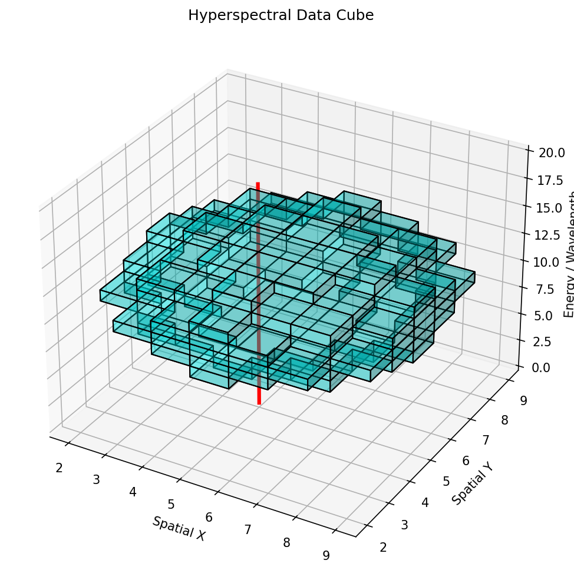
A spectrum image is an \((x,y,E)\) datacube — every pixel holds a full spectrum. Spatial-spectral models borrow strength from neighbouring (near-identical) pixels to denoise each spectrum.
§3 · Decomposition & quantification
13. Reference Recap — Spectral Decomposition (one slide)
| Decomposition | Factorization | Spectral interpretation |
|---|---|---|
| PCA / SVD | \(\mathbf{X}\approx \bar{\mathbf{x}} + \mathbf{C}\mathbf{V}^\top\), \(\mathbf{V}\) orthonormal | Eigenspectra = orthogonal variation directions (can be negative — not physical phases) |
| NMF | \(\mathbf{X}\approx \mathbf{W}\mathbf{H}\), \(\mathbf{W},\mathbf{H}\ge 0\) | \(\mathbf{H}\) = end-member spectra (≈ pure phases), \(\mathbf{W}\) = abundance maps |
| AE / conv-AE | \(\mathbf{x}\!\to\!\mathbf{z}\!\to\!\hat{\mathbf{x}}\) | Non-linear latent; handles peak shift, not just mixing |
- The only thing this unit adds: the spectral reading — non-negativity is physical because photon counts and concentrations cannot be negative; orthogonality is a math convenience with no physical mandate.
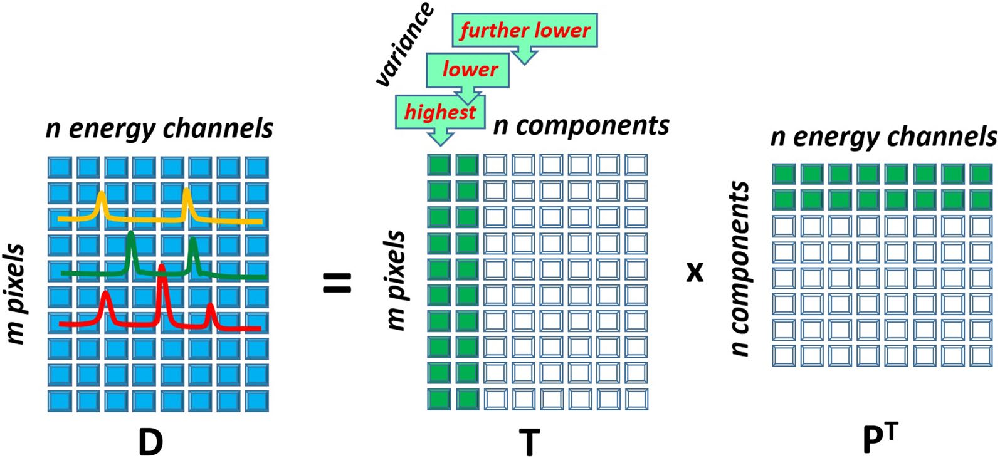
13a. PCA of EELS Spectrum Images — Composition (Bosman et al. 2006)
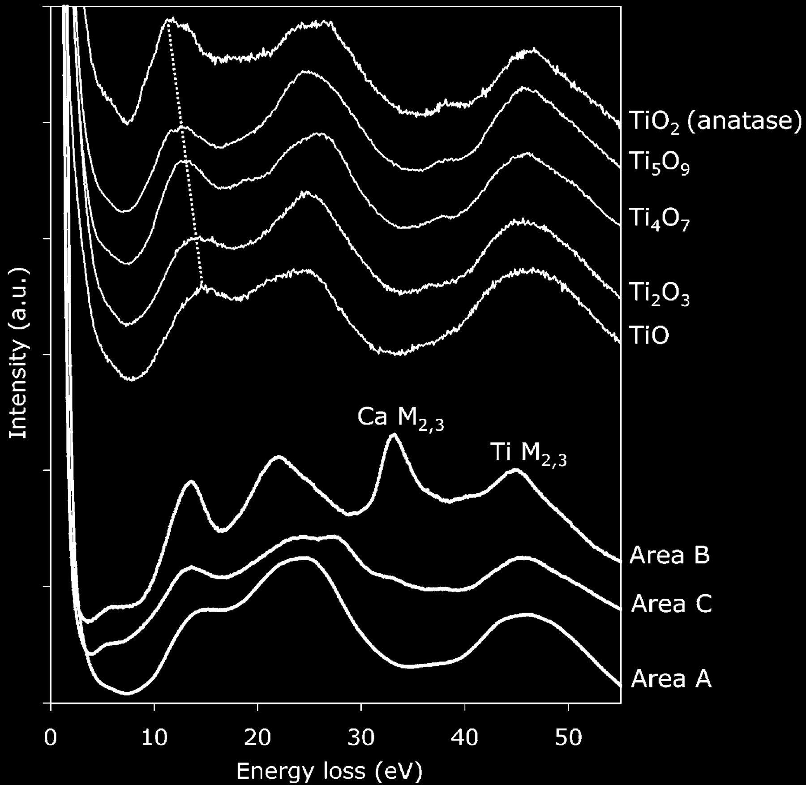
The seminal EM result. PCA of an EEL spectrum image extracts chemically relevant components — score maps localize phases, loadings are interpretable spectra (Bosman et al. 2006).
- Only a handful of phases → a few components carry the chemistry; the rest is noise (low intrinsic dimensionality, slide 03).
- Matching resolved area spectra to reference oxides assigns Ti valence (TiO, Ti₂O₃, Ti₄O₇, Ti₅O₉, TiO₂).
Note
This is slide 13’s PCA row in the STEM: the method is MFML u02; the reading of the loadings as chemistry is the materials content.
13b. Weighted PCA Recovers ELNES Bonding (Bosman et al. 2006)
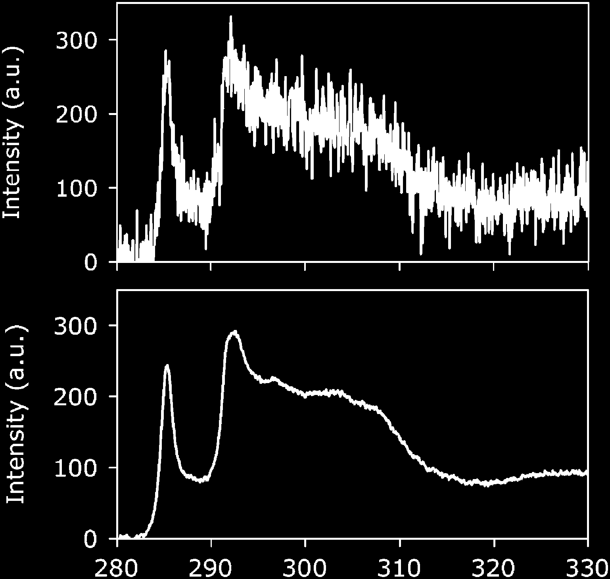
Composition and bonding. With weighted / two-way-scaled PCA, the same decomposition recovers near-edge fine structure (ELNES) — bonding and orientation, not only which elements are present (Bosman et al. 2006).
- Why weight. Plain PCA weights channels by variance — under Poisson noise that means by intensity, so the background dominates. Scaling by the noise (variance-stabilizing) lets PCA see the weak edge.
Important
Get the weighting wrong and PCA “denoises” the bonding signal away. Weighting is not a detail — it decides whether the chemistry survives (slide 20a).
14. MCR-ALS & Rotational Ambiguity
MCR-ALS — Multivariate Curve Resolution by Alternating Least Squares (Juan et al. 2014): solve \(\mathbf{X}=\mathbf{C}\mathbf{S}^\top+\mathbf{E}\) by alternating non-negative least squares for concentrations \(\mathbf{C}\) and spectra \(\mathbf{S}\). In the STEM it unmixes raw EDS/EELS spectrum images into pure-component spectra + abundance maps (Kotula and Keenan 2006) (slide 14a).
Rotational ambiguity. For any invertible \(\mathbf{T}\): \[\mathbf{X} = (\mathbf{C}\mathbf{T})(\mathbf{T}^{-1}\mathbf{S}^\top)\] fits equally well. Non-negativity alone leaves a feasible band of solutions, not a unique answer.
Constraints collapse the band:
- Closure — abundances sum to 1 (mass balance).
- Unimodality — a concentration profile has one maximum.
- Known spectra — fix a reference end-member.
- Selectivity / local rank — zones where only one component exists.
Important
Genuinely not in the methods units. NMF is taught there; MCR-ALS + rotational ambiguity + how physical constraints resolve it is the new content.
[FIGURE: feasible band of resolved spectra under non-negativity only (a fan of curves) collapsing to a single curve as closure + unimodality + a known end-member are added]
14a. MCR in the STEM — Unmixing EDS Spectrum Images (Kotula & Keenan 2006)
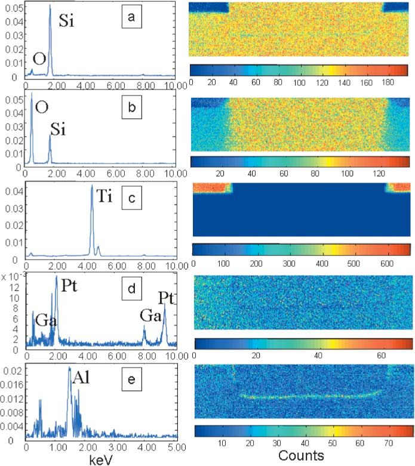
The EDS instantiation of slide 14. MCR applied to a raw STEM-EDS spectrum image returns a high-contrast set of component spectra + maps — no element-by-element windowing (Kotula and Keenan 2006).
- Each component is a non-negative spectrum (a phase) with a non-negative abundance map — the constraints are the physics (slide 13).
- Resolves overlapping lines (e.g. the Ga/Pt FIB artifact) into their own component instead of contaminating the chemistry.
Important
Sandia’s MSA-for-EM line of work is why MCR/PCA are the production default in EDS labs — decades before deep learning. Reach for a network only when these break (slide 24).
14b. Unmixing as Geometry — Endmembers & the Mixing Simplex (Dobigeon & Brun 2012)
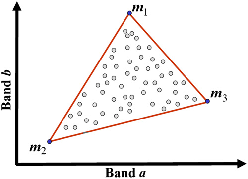
A geometric view of slide 14. Under linear mixing each spectrum is a convex combination of end-members → the data fill a simplex; its vertices are the pure phases.
- Closure (abundances sum to 1) is the simplex constraint; non-negativity keeps pixels inside it.
- This is the same geometry as the Gibbs triangle the autoencoder rediscovers on slide 21 — and the linear model slide 17 stress-tests.
Note
The endmember/abundance picture borrowed from hyperspectral remote sensing — spectroscopy’s cousin discipline. Same math, different photons.
15. Quantification — From Spectra to Concentrations
- A latent coordinate or a peak area is not a number a metallurgist trusts. Quantification produces at.% with a physical basis.
Cliff-Lorimer (EDX, thin film) (Cliff and Lorimer 1975) \[\frac{C_A}{C_B} = k_{AB}\,\frac{I_A}{I_B}\] Ratio of background-subtracted line intensities × a known \(k\)-factor. Needs the thin-film approximation (no absorption).
ζ-factor method (Watanabe and Williams 2006) \[C_A = \zeta_A \frac{I_A}{\rho t}\cdot(\dots)\] Absolute quantification from first principles; folds in mass-thickness, handles absorption self-consistently — the modern standard.
Important
ML can predict \(I_A\) robustly (denoising, deconvolution); the \(k\)/ζ-factor step is physics. Skipping it and regressing concentration end-to-end discards the physical audit trail a lab/certifier requires.
16. Uncertainty on the Quantification
- A concentration without an error bar is not a deliverable (recall the ML-PC u11 thesis: a threshold decision needs a distribution, not a number).
- Error budget for \(C_A\): counting statistics on \(I_A\) (Poisson) · background-model error (systematic, slide 07) · \(k\)/ζ-factor uncertainty · absorption/thickness uncertainty · ML denoiser bias.
- Propagation. Analytic error propagation through the Cliff-Lorimer / ζ equation for the physical terms; the UQ machinery for the ML-predicted parts is ML-PC u11 (GP CIs, deep ensembles, MC-dropout) — referenced, not re-derived.
Important
The often-dominant term is not counting statistics — it is the background-model systematic (slide 07). Reporting only \(\sqrt{N}\) Poisson error bars is the most common honest-looking lie in the field.
17. Non-Linear Unmixing — When Linear Mixing Fails
- The comfortable model: a boundary pixel is \(\mathbf{x} = \alpha\,\mathbf{e}_A + (1-\alpha)\,\mathbf{e}_B + \boldsymbol{\eta}\) — linear mixing; estimate \(\alpha\) from a latent coordinate or Bayesian linear unmixing (Dobigeon and Brun 2012) (slide 17a). Often fine.
- When linear mixing breaks:
- EELS multiple scattering — thick specimen: losses convolve, not add.
- EDX absorption / fluorescence — emitted X-rays re-absorbed depth-dependently.
- XRD channelling / extinction, preferred orientation — intensities not additive in phase fraction.
- What to do: physical forward model (deconvolve plural scattering; absorption correction) → then unmix; or a non-linear decoder (AE — method in ML-PC u05) whose non-linearity absorbs the curvature. Validate against a known mixture.
Important
A non-linear method fitting a non-linear mixture does not prove it recovered the physics. Always check against a sample of known fractional composition.
17a. Bayesian Linear Unmixing of EELS Spectrum-Images (Dobigeon & Brun 2012)
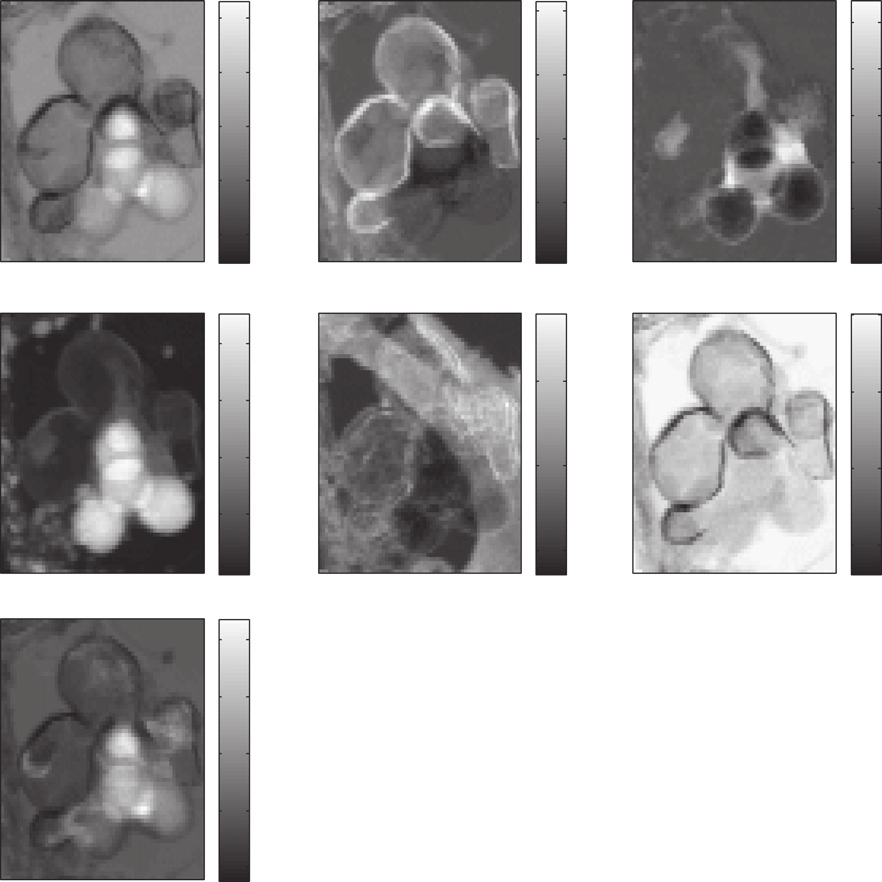
When PCA/ICA struggle. If end-member abundances are statistically dependent — the usual case in real maps — PCA/ICA unmix poorly. A Bayesian model with the simplex priors (slide 14b) estimates end-members + abundances and their uncertainty (Dobigeon and Brun 2012).
- Non-negativity and closure enter as priors, not post-hoc fixes.
- Returns posterior distributions → an error bar on every abundance (slide 16 discipline).
Important
A principled prior beats a generic decomposition when the physics (non-negativity, closure, dependence) is known. Encode the physics; don’t hope the SVD stumbles onto it.
§4 · Representation learning for spectra, applied
18. Deep Denoising Autoencoders for EELS — the EM-Native Workhorse
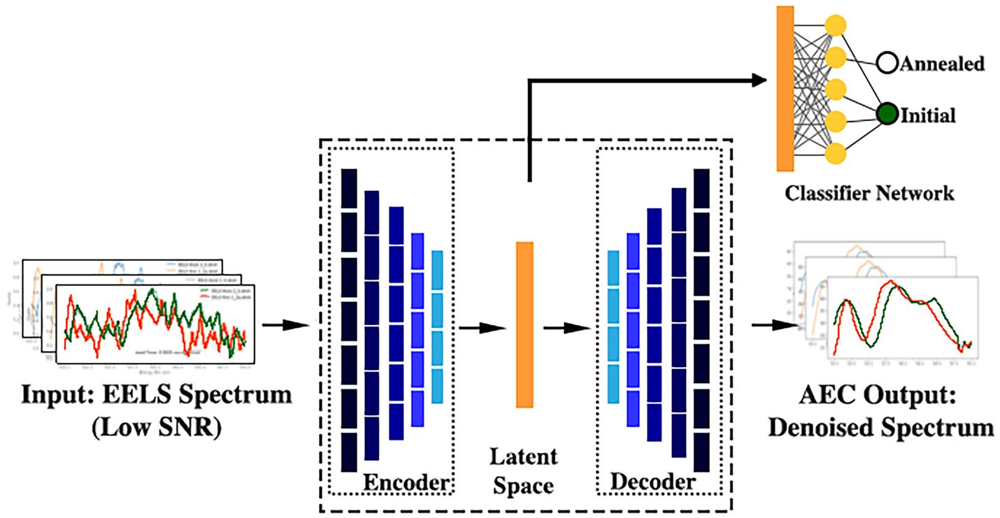
What the EM field actually deploys. Not a giant foundation model — a compact convolutional denoising autoencoder mapping noisy → clean spectra. RapidEELS (Pate et al. 2021) is the canonical case.
- 1-D conv encoder → small latent (≈5-D) → decoder → denoised spectrum.
- Train on simulated / paired clean–noisy spectra (slide 21); deploy at the column.
- The self-supervised / MAE extension (mask 75 %, reconstruct masked bins) is the generic recipe — method owned by MFML u09; add it when an unlabelled archive dwarfs the labels.
Note
The conv-DAE is the workhorse because it is small, fast, trainable on simulation, and auditable: it drops in as a preprocessing denoiser feeding the physical fit (slide 10), not an end-to-end black box.
18a. RapidEELS — Low-Dose Denoising at 25–400 FPS
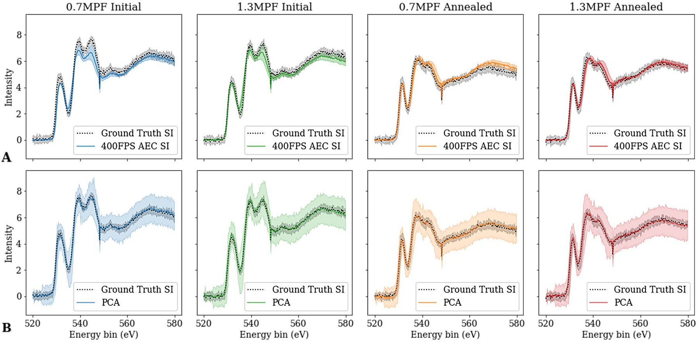
Denoised EELS at 25/100/200/400 FPS vs ground truth: the conv-DAE recovers the O-K / Fe-L edge shape even at ~15 counts/channel (shot-noise SNR ≈ 3.8), and beats 5- and 7-component PCA on fine-feature MSE (Pate et al. 2021).
- Dose, not method, is the constraint. At 400 FPS (0.0025 s dwell) the raw edge is buried in Poisson noise; the DAE restores a fittable edge.
- Beats PCA on fine-feature MSE (vs 5-/7-component) — the non-linearity helps where peak shape, not just intensity, carries the signal.
Important
Denoising here is a preprocessing step validated against ground truth (slide 10) — never a latent read as the answer (slide 17).
18b. From Latent to Oxidation State — Fe³⁺ vs Fe⁴⁺ (RapidEELS)
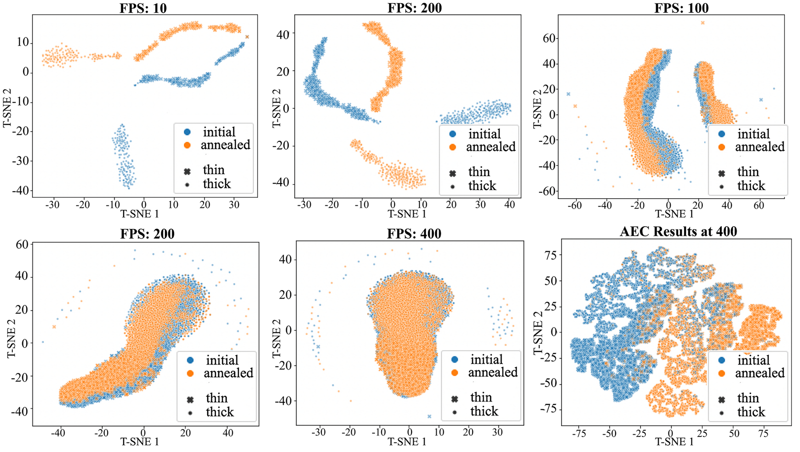
- Freeze the denoiser’s encoder; train a tiny classifier on the latent — the SSL “pretrain → probe” recipe (MFML u09), here on EELS.
- Accuracy degrades gracefully with dose: usable oxidation-state triage even at video rate.
Important
But a softmax class is not a calibrated valence. For the continuous mixed-valence gradient, read the fitted white-line ratio (slide 23), not the latent (slide 17). Classification is fast triage; the physical fit is the deliverable.
18c. Self-Supervised Deep Denoising of Weak Signals — UDVD (Wang et al. 2025)
- No clean targets needed. The unsupervised deep video denoiser (UDVD), adapted from computer vision, denoises an EELS series from the noisy data alone — blind-spot self-supervision, no ground truth (Wang et al. 2025).
- Benchmarked on simulated EELS (>10× SNR on core-loss), then shown on two hard cases:
- mapping dilute Gd dopants in CeO₂ nanoparticles;
- vibrational / phonon modes in h-BN at atomic resolution.
Important
Self-supervision is the right tool in the STEM because clean references rarely exist and dose is capped by beam damage — you learn from the noisy data you can afford to acquire (slides 03, 26).
Note
Method lineage: UDVD is a blind-spot CV denoiser adapted to EELS — the generic architecture is MFML u05/u09; the contribution is the physics-aware adaptation + simulation benchmarking.
19. Foundation & Self-Supervised Models for Spectra — Promise vs Reality
- The SSL families are generic, owned by MFML u09: masked autoencoders, DINOv2-style self-distillation (Oquab et al. 2024), I-JEPA-style latent prediction. On spectra they would turn an unlabelled archive into a feature extractor — rule of thumb: you need \(\gtrsim 10\times\) more unlabelled than labelled spectra before it pays off.
- The domain content is the augmentations — which transforms are physically valid invariances?
- ✅ energy shift within calibration tolerance · peak broadening within instrument range · Poisson resampling at lower dose.
- ❌ intensity flips · channel permutation · contrast stretch — these teach false invariances and erase chemistry (slide 02: the axis is physics).
Important
Reality check. There is no validated EELS/EDS foundation model yet. The field’s deployed deep learning is the conv denoiser (slide 18) and decades-old multivariate statistics (slides 13–14a). Treat “spectral foundation model” as a research direction, not a tool to reach for.
20. Why Unsupervised Compression Can Destroy the Science
Think About This — the PCA rare-phase trap
Question. PCA denoising lets you cut acquisition dose 10×. Why not always do it?
Hint. Think about a feature present in only one or two pixels of a million-pixel map.
Consider.
- Eigenspectra are computed from the whole dataset — they encode the common.
- A rare phase contributes negligible variance → it falls outside the top-\(K\) subspace.
- Truncated reconstruction projects the rare phase away: denoising literally erases the discovery.
- The same logic indicts MAE/SSL latents, NMF with too-few components, aggressive spatial smoothing (slide 12).
Important
Denoising vs. discovery is a fundamental tension, not a tuning issue. Always inspect the residual \(\mathbf{x}-\hat{\mathbf{x}}\) spatially — a rare phase hides there, not in the reconstruction. In EELS this is documented: PCA filtering introduces a systematic bias (Lichtert and Verbeeck 2013) and artifacts when peak-to-background is poor (Cueva et al. 2012) (slide 20b).
20a. Getting PCA Denoising Right — Weighting & Optimal Truncation
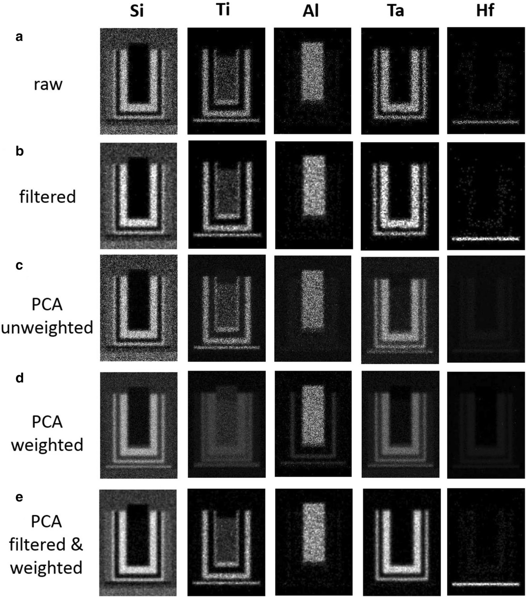
PCA denoising must be done right.
- Weight for Poisson noise before the SVD (variance-stabilizing) — otherwise high-count channels dominate and the weak signal is lost (slide 13b).
- Choose the truncation rank carefully: too few components erase real features, too many keep noise. Potapov & Lubk give an optimal truncation that beats ad-hoc scree-elbow choices (Potapov and Lubk 2019).
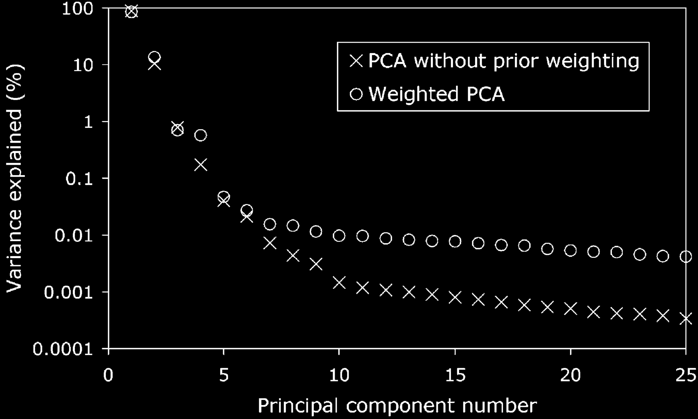
20b. When PCA Filtering Lies — Bias & Artifacts
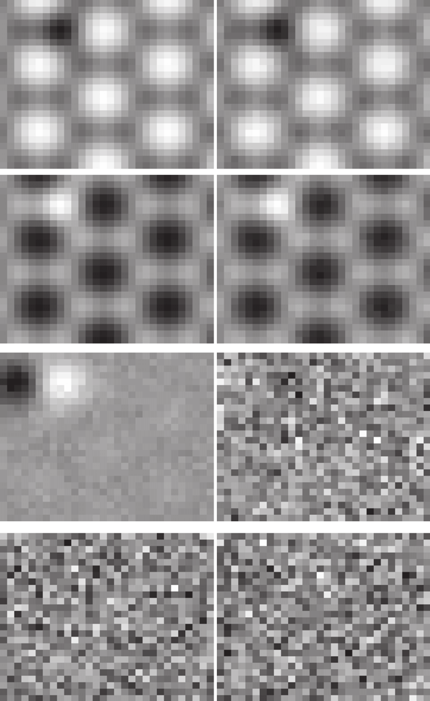
The cautionary literature — take it seriously.
- Lichtert & Verbeeck (2013): PCA noise filtering introduces a significant bias in estimated parameters — precision can even beat the Cramér–Rao bound while the answer is wrong. Origin: incorrect retrieval of loadings for noisy data (Lichtert and Verbeeck 2013).
- Cueva et al. (2012): poor peak-to-background EELS, PCA-filtered → serious artifacts (Cueva et al. 2012).
Important
“Looks clean” ≠ “is correct”. A denoised map can be precise and biased at once. Validate against unfiltered fits / known references (slide 16) before trusting PCA-denoised numbers.
21. What the Latent Learns — and Seeding It From Simulation
The latent can rediscover the physics.
- Train a 2-D-latent AE on EDX of a ternary Fe-Cr-Ni alloy; colour latent points by known composition.
- \(c_\text{Fe}+c_\text{Cr}+c_\text{Ni}=1\) → only 2 free composition variables → the latent forms a triangle: the network re-derived the Gibbs ternary with no thermodynamics input.
- Emergent, not programmed — but only if preprocessing (§2) made composition the dominant variance.
Seed it from simulation when labels are scarce.
- Pretrain on simulated spectra, fine-tune on few real ones:
- XRD: Rietveld / structure-factor simulation
- EELS: FEFF / DFT
- EDX: Monte-Carlo (CASINO, DTSA-II)
- Add realistic Poisson + readout noise + drift to the sim.
Important
The sim must capture the right physics (peak shapes, backgrounds, artifacts) or you transfer a simulation accent the real instrument never speaks.
§5 · Applications & operando
22. Case: Automatic XRD Phase Identification (non-STEM contrast)
Problem. Identify crystallographic phases in a noisy multi-phase XRD pattern; ICDD peak-matching is manual and brittle to mixtures, preferred orientation, and broadening.
Pipeline (all methods referenced). §2 preprocessing (SNIP background, LaB₆ \(2\theta\) calibration) → AE/classifier pretrained on simulated patterns (slide 21) → nearest-neighbour in latent space; high reconstruction error → amorphous/unknown (slide 20).
Note
Here only briefly. XRD is not a (S)TEM modality — a contrast case. The same recipe (sim-pretrain + latent + residual) carries straight over to the EELS/EDS cases that follow (23–24a).
23. Case: EELS Spectrum Imaging — Fe Oxidation-State Mapping
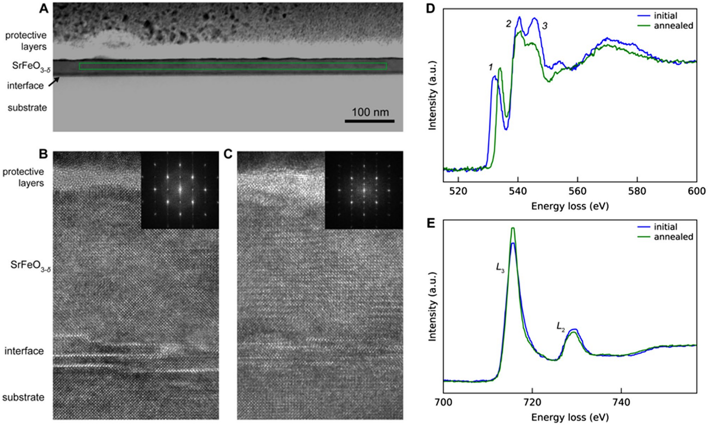
Problem. Map Fe oxidation state at nm resolution. The Fe-L₂,₃ white-line ratio (\(L_3/L_2\)) and onset shift (~0.3 eV, slide 04) separate the valences — but it is buried in Poisson noise at usable dose.
Pipeline. Power-law background (07/07a) → ZLP calibration (08) → DAE denoise pretrained on simulated Fe-L edges (Pate et al. 2021); weak signal → self-supervised UDVD (Wang et al. 2025) (18c) → constrained white-line fit (10) → continuous valence from the fitted ratio, not a raw latent (17).
Impact. Oxidation-state mapping at ~5–10× lower dose; resolves continuous mixed-valence gradients; validated against valence reference standards (16).
24. Case: Large-Scale EDS Maps — the Throughput Story
The scale challenge (the point of the slide). \(512{\times}512{\times}2048 \approx 5\times10^5\) spectra per field; multiple fields → \(10^6\)–\(10^7\) spectra per sample. The bottleneck is engineering, not method novelty.
Why PCA, specifically, here. Linear, one-pass, \(O(\min(N,D)^2)\), deterministic, streamable (incremental SVD). Denoise via top-\(K\) reconstruction → K-means in score space → map clusters back to \((x,y)\) → phase map in minutes on a workstation. (Method: ML-PC u02; noise-weighted optimal truncation (Potapov and Lubk 2019); MCR for physical components (Kotula and Keenan 2006), slide 14a.)
Engineering reality. Memory-mapped datacubes, chunked/out-of-core SVD, GPU only where it pays. The win is throughput at fixed accuracy, not a better model.
Important
And it inherits slide 20’s caveat: trace elements below the noise floor and rare phases can be denoised away. Keep a residual/anomaly pass alongside the phase map.
24a. Worked Case — STEM-EDS Phase Mapping of a Device Cross-Section
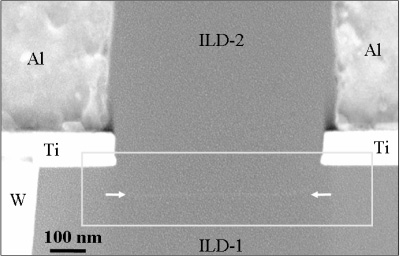
The end-to-end story. Raw EDS datacube → noise-weighted PCA denoise + optimal truncation (Potapov and Lubk 2019) → MCR for physical components (Kotula and Keenan 2006) → abundance maps registered to \((x,y)\) → interfacial chemistry of the device.
- Resolves nm-scale barrier / silicide layers and separates FIB Ga / Pt-cap artifacts into their own components (slide 14a).
- Decades old, still the production default — the bar any deep method must clear.
Important
The deliverable is which phase is where, with what spectrum — auditable components, not a latent embedding. Match the method to the question (throughput + interpretability), not to fashion.
25. Discovery via Anomaly — the Workflow
- Train a representation on spectra from known phases only (clean nominal set — the prerequisite, ML-PC u05 §E).
Workflow:
- Apply to a new sample; most pixels reconstruct well.
- Map reconstruction error spatially → anomaly map (the slide-20 residual, used deliberately).
- Extract spectra from high-error regions; inspect physically.
- Identify the unknown phase; add to training; retrain.
- Example. AE trained on two base metals of a diffusion couple; a high-error band at the interface revealed an unexpected intermetallic invisible in the denoised map.
Important
The AE-anomaly method is ML-PC u05 §E (threshold from nominal validation error, never from anomalies). This slide is the materials discovery workflow wrapped around it.
26. Operando / Streaming Spectral Monitoring
- Operando: time-resolved XRD / Raman / EELS during synthesis, cycling, heating, catalysis — a spectrum stream, not a static cube.
New problems the stream creates
- Drift over time — the nominal distribution itself moves; a fixed threshold goes stale.
- Novelty detection online — a new phase appearing is the result.
- Adaptive acquisition — spend dose where the spectrum is changing.
Beam-damage / dose-fractionation
- Track spectral change vs accumulated dose; stop or fractionate before the probe alters the sample (recall slide 23: beam-induced Fe³⁺→Fe²⁺).
- Poisson model (slide 03) sets the detectable-change floor per frame.
Important
Methods referenced: AE-anomaly ML-PC u05 §E; Poisson noise ML-PC u02. New here: time — non-stationarity, online thresholds, dose as a budgeted resource.
27. Spectral Inverse Problems — EXAFS → Local Structure (stretch)
- Some spectra encode a structure: EXAFS \(\chi(k)\) is a sum over scattering paths, Fourier-related to a radial distribution (neighbour distances, coordination numbers). Recovering it is a modality-specific inverse problem through a known forward model (FEFF) — ML supplies a fast differentiable/surrogate inverse with uncertainty (theory: ML-PC u08).
Important
The unit’s recurring lesson, a third time. Ill-posedness here = rotational ambiguity in MCR (14) = non-identifiable peaks (10). The cure is always the same: physical constraints (path filtering, known coordination chemistry). EXAFS is a synchrotron method, kept only to make that pattern unmistakable.
Wrap
28. Key Takeaways — It Was Never About the Method
- The signal’s structure is dictated by the probe physics — that, not the algorithm, dictates the pipeline.
- Preprocessing dominates: a wrong background/calibration is a systematic error no model fixes (slides 06–11).
- Identifiability is the recurring disease — peak overlap (10), MCR rotational ambiguity (14), inverse ill-posedness (27); physical constraints are the recurring cure.
- A latent is not a quantity: physics + a reference standard turn it into a number with an honest error budget (15–17).
- Unsupervised compression erases the rare — denoising vs discovery; live in the residual (20, 25, 26).
- EM-native deep denoisers (conv-DAE, UDVD) recover low-dose EELS/EDS (18, 18c); PCA denoising must be weighted & validated (20a/20b); spectroscopy foundation models are still nascent (19).
Important
The methods live in MFML u02/u05/u09 and ML-PC u02/u05. This unit was about what the signal physics demands. Next: Unit 10 — Transformers for materials.
28a. EELS/EDS Algorithms in the STEM — A Map
| Task | Classical (still the default) | Deep / modern |
|---|---|---|
| Background | power law, SNIP, AsLS; LCPL + local averaging (Cueva et al. 2012) | — |
| Denoising | weighted / optimal PCA (Bosman et al. 2006; Potapov and Lubk 2019) | conv-DAE (Pate et al. 2021); self-supervised UDVD (Wang et al. 2025) |
| Decomposition / unmixing | PCA (Bosman et al. 2006), MCR (Kotula and Keenan 2006), Bayesian LU (Dobigeon and Brun 2012) | non-linear AE decoders (u05) |
| Quantification | Cliff-Lorimer (Cliff and Lorimer 1975), ζ-factor (Watanabe and Williams 2006) | ML for intensity extraction only |
| Valence / ELNES | reference-spectrum fitting (Bosman et al. 2006) | latent classifier (Pate et al. 2021) |
Important
Two honest truths. (1) Multivariate statistics (2006–2019) is still the production workhorse. (2) Deep learning’s clearest EELS/EDS win so far is denoising for low dose — the enabler, not a replacement for the physics.
Continue
29. References
EELS/EDS algorithms in the (S)TEM
- Multivariate statistics: Bosman et al. (2006) (PCA-EELS, composition + bonding), Kotula and Keenan (2006) (MCR-EDS), Dobigeon and Brun (2012) (Bayesian unmixing), Potapov and Lubk (2019) (optimal PCA)
- Background & PCA cautions: Cueva et al. (2012) (LCPL / local averaging), Lichtert and Verbeeck (2013) (PCA noise-filter bias)
- Deep learning: Pate et al. (2021) (RapidEELS conv-DAE), Wang et al. (2025) (self-supervised UDVD)
Preprocessing, chemometrics & quantification
Generic ML (derived in MFML u05/u09 — referenced, not central)

© Philipp Pelz - Machine Learning in Materials Processing & Characterization